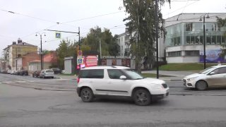
01
Общество и городская среда · событие дня

Врачи использовали необычный метод — пересадили на лицо лоскут тканей с живота. Операция прошла успешно, пересаженные ткани прижились.…
ЕР: 57.10 % КПРФ: 14.01 % ЛДПР: 9.32 % Новые Люди…
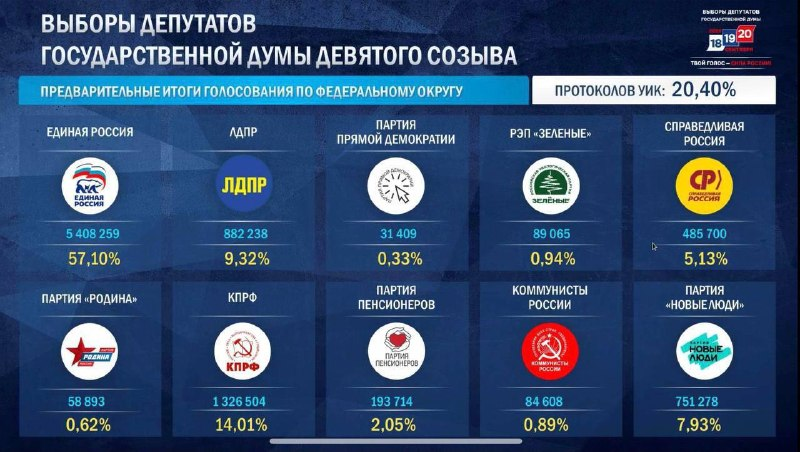
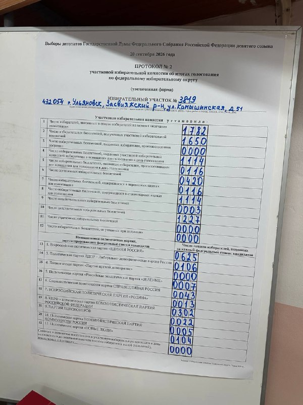
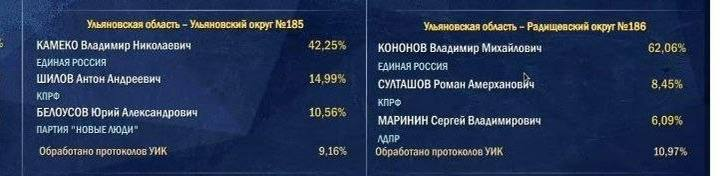
Именно эти пять партий, предварительно, преодолевают барьер в 5% и проходят в Госдуму по спискам.…
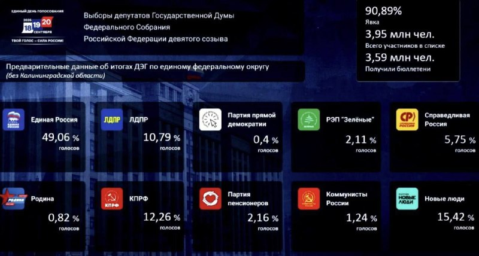
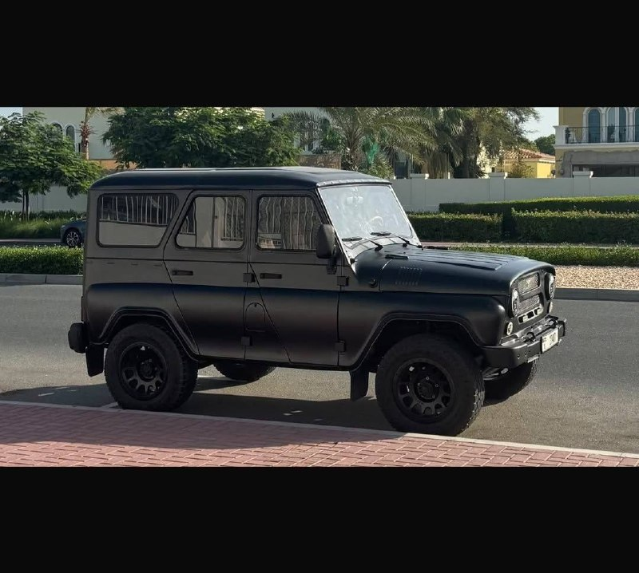
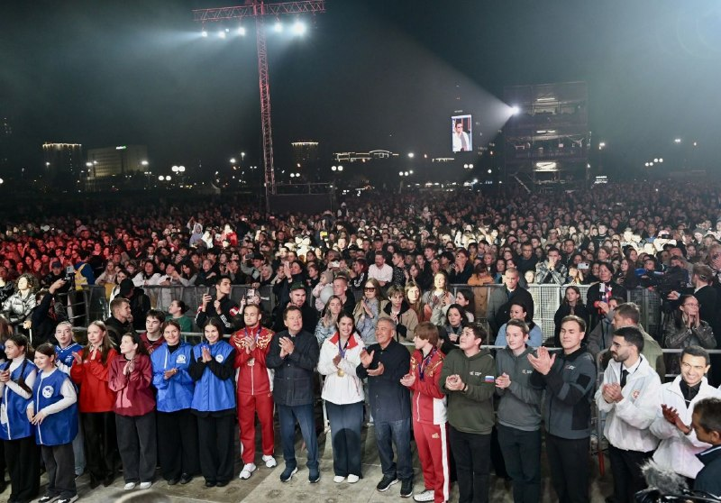
Ещё 8,4 млн рублей пойдут на программу «СВОИ. Точка опоры» для семей с детьми участников СВО.…
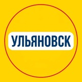
Там было много всего: сильный вокал, фортепиано, игры, другие интерактивы, разговоры о любви и браке, о сложностях отношений, о том, как люди в ту эпоху вообще умудрялись друг с другом объясняться.…

Сотрудник «Авиастара» Александр Горбачев сделал свой выбор. В Ульяновской области продолжается голосование.…
Ульяновцев приглашают на Никитинские чтения, посвящённые юбилею авиастроительного предприятия «Авиастар».…

А Доска почета на центральной заводской площади была местом встреч и собраний: здесь каждый мог увидеть, кто заслужил признание коллектива.…
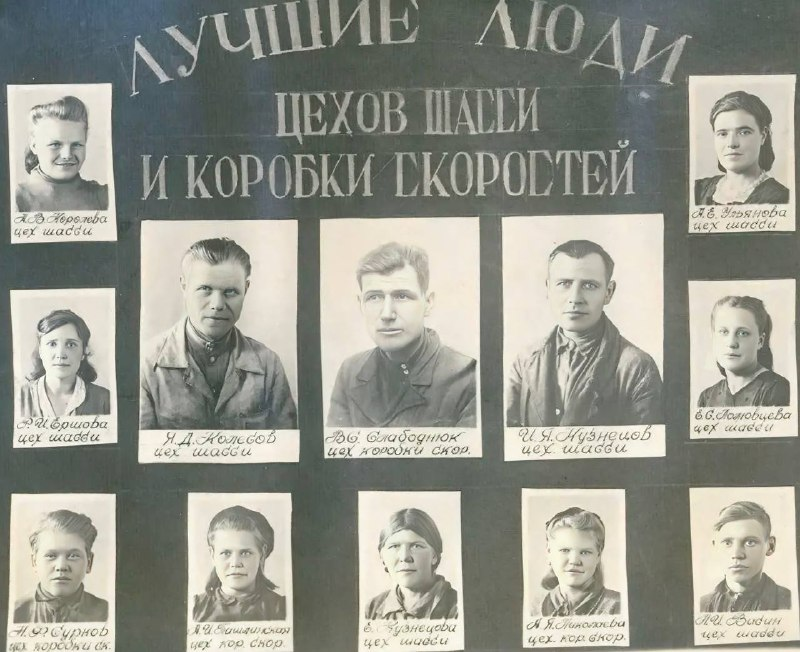
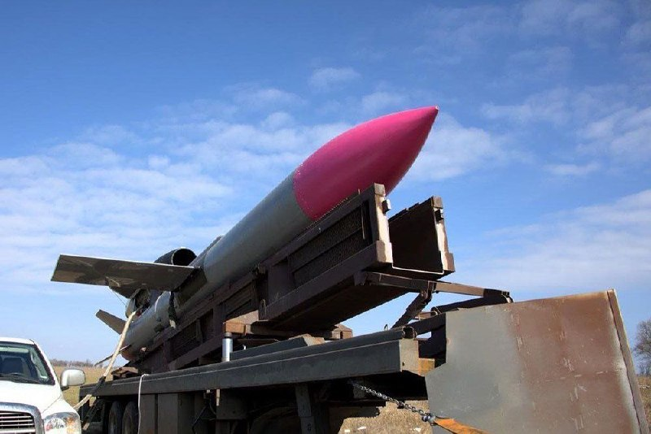

Соответствующие изменения в областной закон, регулирующий вопросы проведения капитального ремонта общего имущества в МКД, одобрили на заседании Правительства региона под руководством председателя Правительства Геннадия Спирчагова.…

Операция прошла успешно, ткани прижились. Мужчину уже выписали, он восстанавливается дома.…
Они провели сложную операцию и пересадили пациенту лоскут ткани с живота, чтобы закрыть участок повреждения.…
Врачи использовали необычный метод — пересадили на лицо лоскут тканей с живота.…
После неэффективной химиотерапии врачи удалили опухоль вместе с прилежащими тканями.…
Главное из разбора урологов: Как отличить от радикулита: При колике невозможно найти «щадящую» позу, боль невыносима, человек мечется и часто испытывает тошноту.…


Вечером — музыкальная и развлекательная программа в клабхаусе STEEL WINGS MC Ulyanovsk: дружеское общение, еда, чай и живые музыкальные коллективы. Вход свободный.…
Предстоящий матч против прямого конкурента по турнирной таблице станет классической «игрой за шесть очков».…

Старший тренер команды Владимир Корнилов отметил, что самым сложным соперником стала сборная Коми: в тай-брейке ульяновцы выиграли 21:19 и взяли матч со счётом 2:1.…

С 14 по 19 сентября в Уфе прошли Всероссийские соревнования общества «Динамо» по волейболу.…
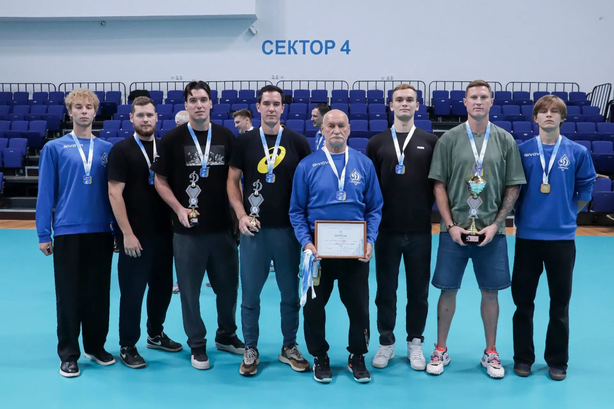
Своими махинациями они успели нанести магазину ущерб на сумму более 3,5 тысяч рублей. Аферу быстро раскрыли наши полицейские — подозреваемых задержали, а весь обманом добытый товар вернули владельцу.…
Сейчас по статье 8.52 КоАП РФ штраф для граждан составляет 1,5–3 тысячи рублей, для должностных лиц — 5–15 тысяч, для организаций — 15–30 тысяч.……
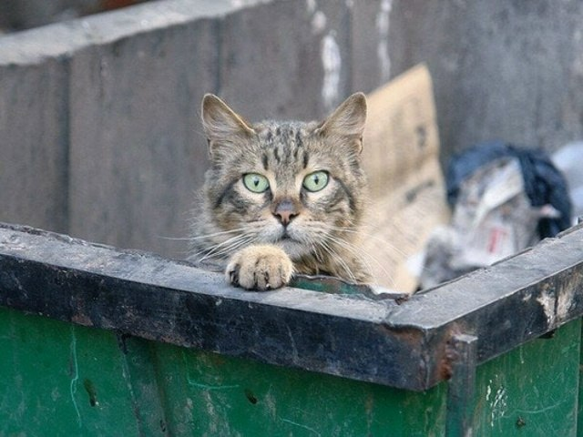
Суд приговорил предпринимателя к 9 годам и 3 месяцам колонии строгого режима. Приговор уже вступил в силу. 👍 — поделом ему!…
За четыре месяца виртуальных ритуалов потерпевшая перевела мошеннице более 100 тысяч рублей.…
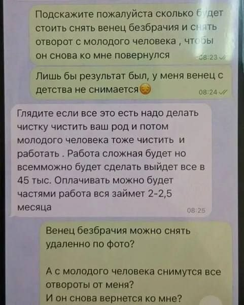
Работы идут в рамках нацпроекта «Экологическое благополучие» и федерального проекта «Сохранение лесов»: ведётся уход за лесными культурами, развивается питомническое хозяйство, закупается спецтехника.…
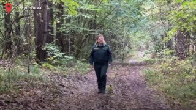
рублей. Мужчина так и не вернулся, а «прорицательница» перестала отвечать. Женщина обратилась в полицию.…
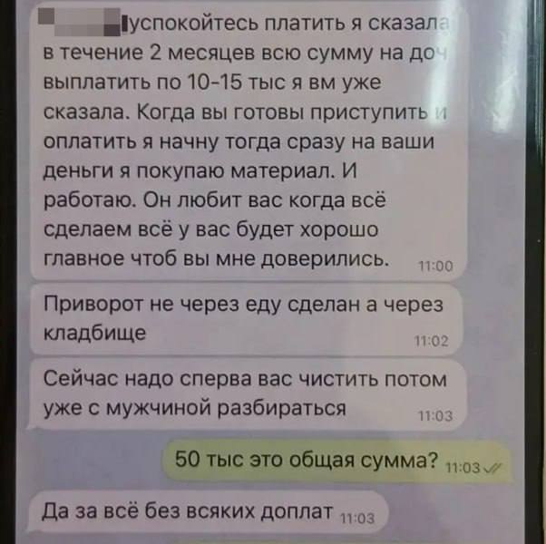
После расставания с партнёром клиентка надеялась вернуть отношения с помощью «оккультных процедур», но в итоге поняла, что её обманывают — гадалка перестала выходить на связь.…
Обещанного семейного счастья потерпевшая так и не дождалась, после чего обратилась в правоохранительные органы.…

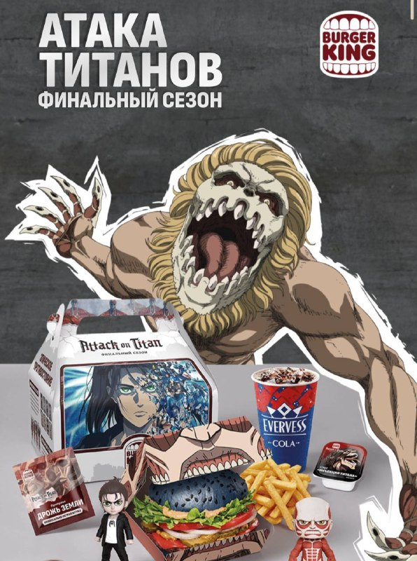
Знаковый 100-тысячный рубеж пересекли аграрии Карсунского…

Очевидцы заметили отпечатки лап прямо на грунтовой дороге вблизи населенного пункта.…
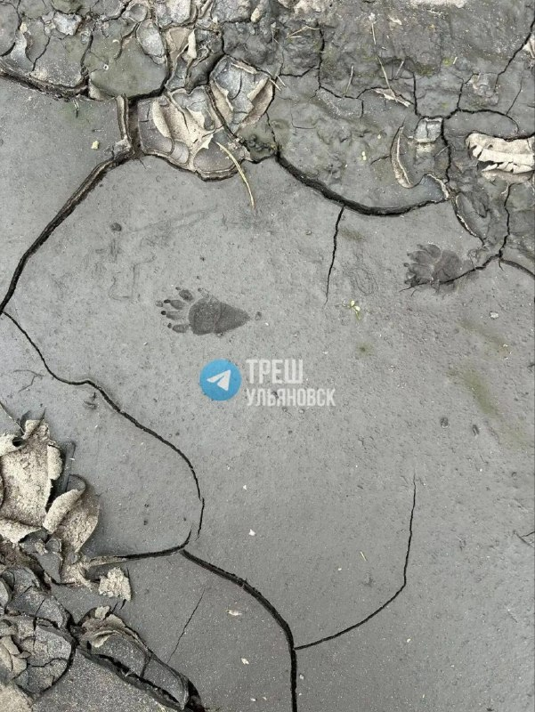
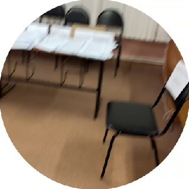
Дуванов Николай Иванович - фронтовик, участник освобождения Румынии, Венгрии от немецко-фашистских…
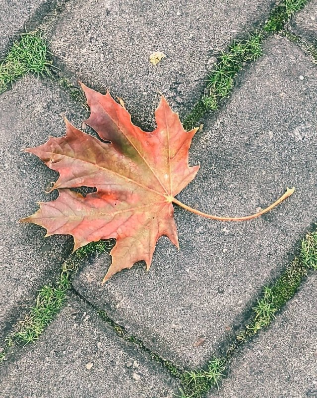
12 сентября в Ульяновской области отметили День семейного…
До 10:00 понедельника трамваи №4 и №22 и маршрутка №96 ходят как обычно.…
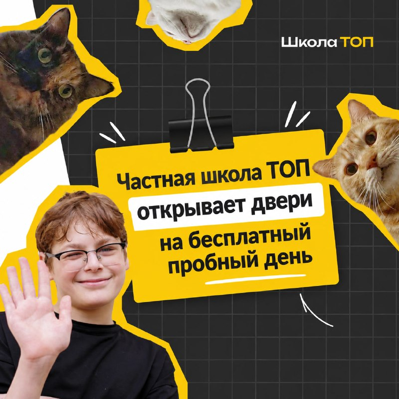
👉 Узнать подробности ✅ В программе — интерактивные занятия, захватывающие эксперименты, погружение в ИТ, создание авторских проектов и знакомство с английским языком в живом формате.…
Но необычно видеть "агитаторами" учителей и воспитателей детсадов.…
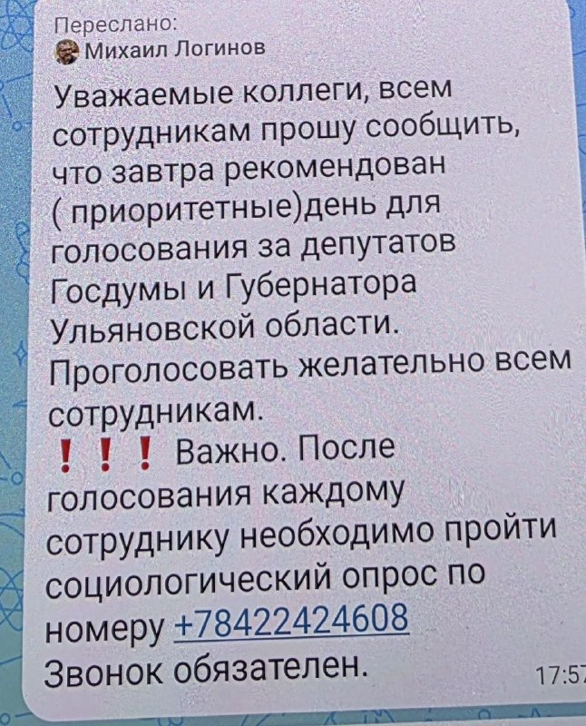
Министерство просвещения Российской Федерации направило в регионы методические рекомендации по организации преподавания физической культуры в 2026/27 учебном году.…
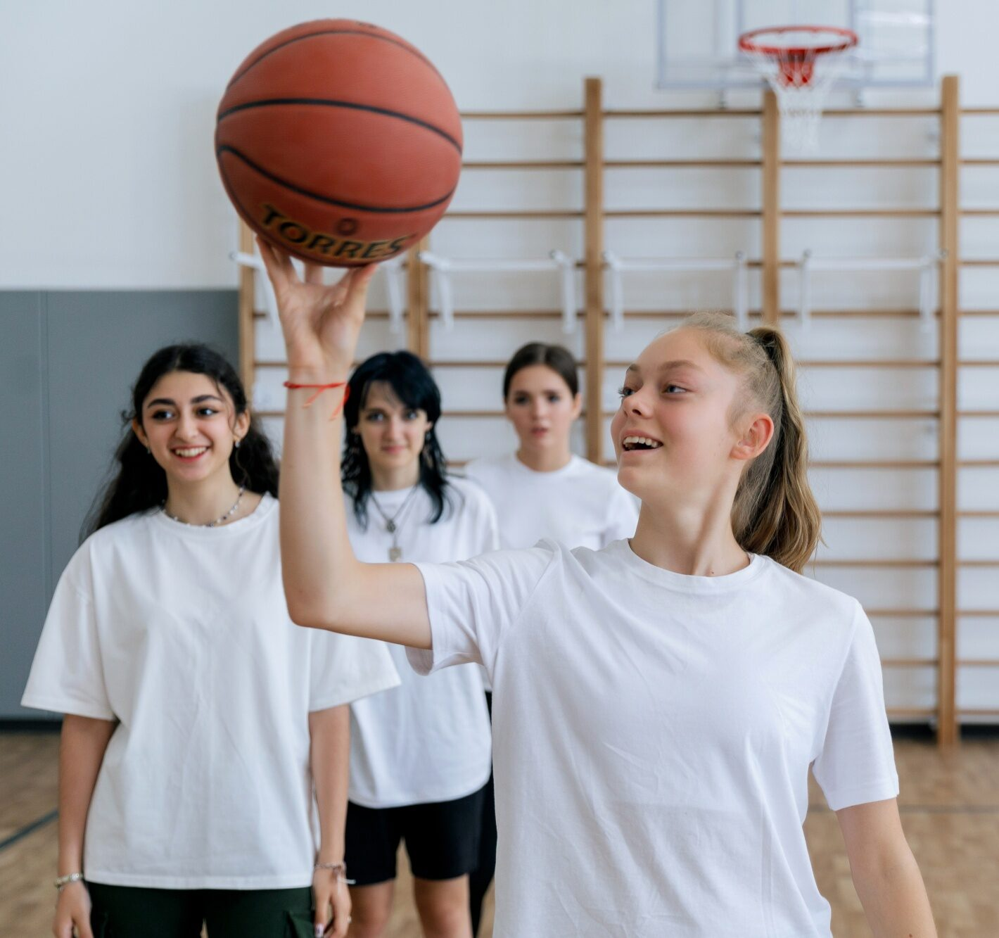
10 сентября в Карсунском художественно-краеведческом музее состоялось знаменательное событие – открытие выставки картин «Пушкин.…
В Ульяновской области продолжает расширяться сеть муниципальных цифровых…

Он созывал на молитву, предупреждал о беде, возвещал о празднике.…
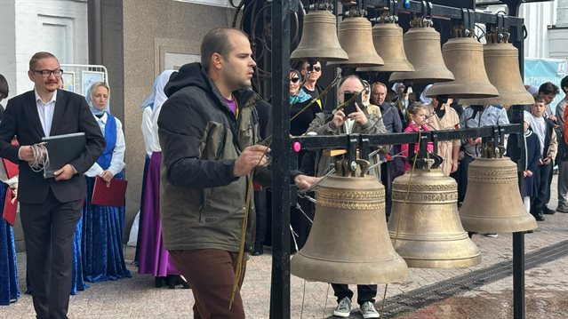
| Тема | Завтра | Ожидание | Уверенность |
|---|---|---|---|
| БПЛА и воздушные угрозы | ↑ рост | ~45.1 упоминаний | средняя |
| Выборы-2026 | ↓ спад | ~22.7 упоминаний | средняя |
| Авиапром / УКБП / Ил-114 | ↑ рост | ~16.2 упоминаний | средняя |
| Транспорт и дороги | ↓ спад | ~51.2 упоминаний | средняя |
| Спорт | ↑ рост | ~37.7 упоминаний | средняя |
| Городская среда | ↓ спад | ~21.3 упоминаний | средняя |